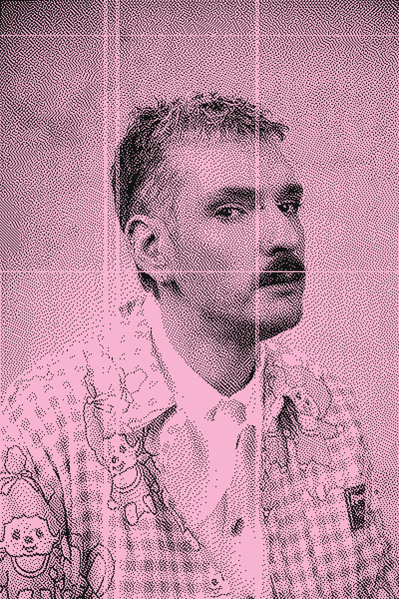

Há mais de 15 anos, desenha métodos e estruturas para mais de 50 empresas, transformando futuros em narrativas desejáveis, estratégias possíveis e realidades testáveis.

Maia Oazem é uma artista temporal nascida e baseada em São Paulo. Sua prática atravessa pesquisa cultural, elaboração de futuros e estratégia criativa, e toma forma em ficção científica, design especulativo e transformação de organizações.
Nascida em 1990, pertence a uma geração que cresceu entrando e saindo da internet até a chegada do mobile, e agora estuda, a partir dessa vivência, o que nos acontece com o pós-IA. Passou quinze anos construindo outras coisas possíveis por dentro da Oracle, da Salesforce, do Google e da Capgemini, enquanto mantinha seu fluxo experimental na gira., laboratório que em 2027 abre sua segunda década como laborateliê. É conhecida por usar a ficção para guiar as estratégias, e pela estratégia nascida do que até então parecia ficção.
Seu trabalho foi destacado pela Veja, pela Época Negócios, pelo Estadão e pela CNBC, e apresentado no Febraban Tech e na Abradi. Leciona futuros e IA aplicada na ESPM, integra a diretoria da Associação Brasileira de Futuros, é signatária do projeto Design Centrado na Sociedade, do IF, e fez parte do grupo de ética em IA do Google. Seus roteiros de ficção científica foram selecionados no Brasil, no Canadá, nos Estados Unidos, na Índia, na Itália e no Japão.
em propostas de tecnologias emergentes (cloud, IA e integração de sistemas) para contas Tier 1 na América Latina.
Fundadora
Gerente Sênior, Storytelling e Narrativas Futuras
Consultora, Storytelling e Narrativas Futuras
Consultora, Conteúdo e Estratégia
Consultora, Inovação
Consultora, Storytelling e Inovação
VP de Inovação e Estratégia
Voluntariado e Inovação Social
Comunicação Corporativa
Planejamento Digital
Pós-graduação em Psicanálise: Teoria e Clínica
Pós-graduação em Futures Thinking
Pós-graduação em Design Estratégico e Inovação
Bacharelado em Publicidade e Propaganda
Copenhagen Institute for Futures Studies · Hyper Island · Escola Internacional de Cinema · Roteiraria · seminários de Robert McKee, Nova York
Contrate uma Mãe (2017) · Saulo e a Saia (2017) · Ingresso Social (2018) · Future Stories Deck (2020) · spec(S) (2023)
Ouro, Design Experimental, Design f(R)iction (2025) · Pensamentos Recorrentes (2019)
Finalista, categoria Experimental, Ingresso Social
Soluções Digitais para Saúde Mental, livestream.now
Relações Públicas, Contrate uma Mãe